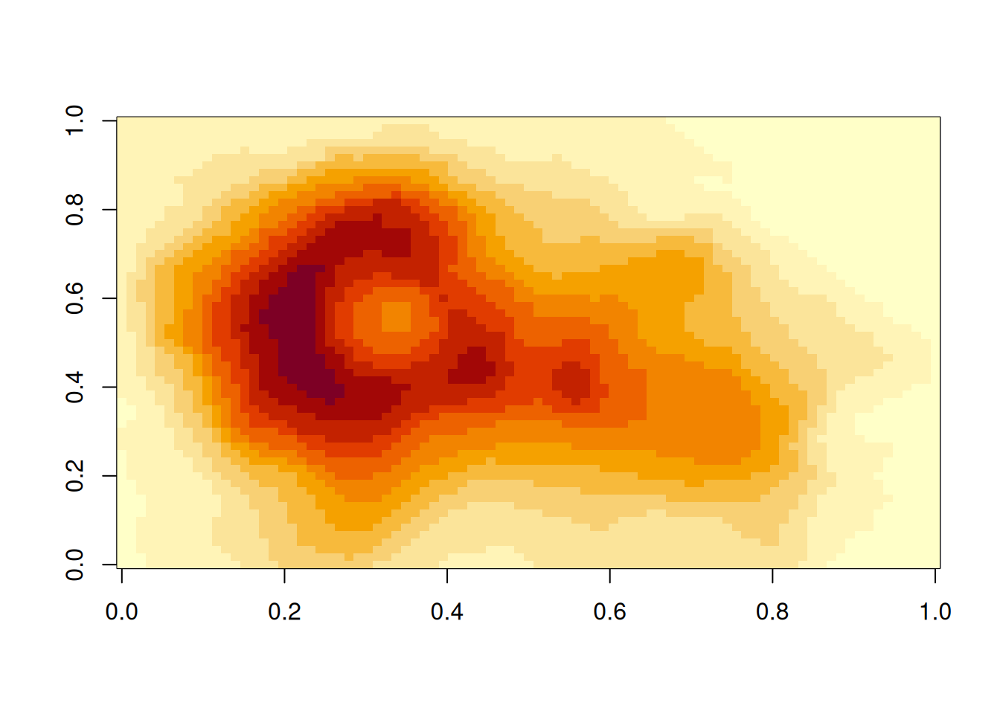

# computer code goes in three back ticks
1 + 1[1] 22 + 2[1] 4So far we have covered:
Now, let’s talk about using Quarto.
This is a Quarto document (demo). It has three parts:
The metadata of the document tells you how it is formed - what the title is, what date to put, and other control information. If you’re familiar with LaTeX, this is kind of like how you specify the many options, what sort of document it is, what styles to use, and so on at the front matter.
Quarto documents use YAML (YAML Ain’t Markup Language) to provide the metadata. It looks like this.
---
title: "An example document"
author: "Nicholas Tierney"
format: html
---It starts and ends with three dashes ---, and has fields like the following: title, author, and format.
title and author are special inputs which place the title and author information at the top of the document in large font. They are optional!
format: html tells us we want this to be a HTML formatted document - you’ll see what this looks like in a moment!
Is markdown, as we discussed in the earlier section,
It provides a simple way to mark up text
- bullet list
- bullet list
- bullet list
1. numbered list
2. numbered list
3. numbered list
__bold__, **bold**, _italic_, *italic*
> quote of something profound ```r
# computer code goes in three back ticks
1 + 1
2 + 2
```bold, bold, italic, italic
quote of something profound
# computer code goes in three back ticks
1 + 1[1] 22 + 2[1] 4We refer to code in a Quarto document in two ways:
Code chunks are marked by three backticks and curly braces. We put the letter r inside them to denote them as “r” code chunks, but you can instead use “python” and “julia” instead:
```{r}
#| label: r-chunk-name
# a code chunk
``````{python}
#| label: py-chunk-name
# a code chunk
``````{julia}
#| label: julia-chunk-name
# a code chunk
```Quarto provides support for R, Python, Julia, and Observable, which are all very powerful and awesome languages! However currently we will only be focussing on using R in this book. But I want to make sure that you know you can use python, or Julia, or Observable! More languages will be supported into the future, I believe.
a backtick is a special character you might not have seen before, it is typically located under the tilde key (~). On USA / Australia keyboards, is under the escape key:
You do not have to type the backticks - there are keyboard shortcuts for this!
Ctrl + Alt + IOption + Command + IThis creates an empty code chunk in wherever your cursor is.
You can also run code with keyboard shortcuts (windows/mac):
Ctrl + Enter / Cmd + Return: run the current line, or whatever is selected.Ctrl + Alt + C / Option + Command + C: runs the whole code chunk you are in. You can also use the green play button at the top right of the code chunk.You can also run every chunk above the code chunk you are in, by pressing the grey downward arrow in the code chunk. This is a really useful one to use when you are wanting to make sure all the code is up to date, or you don’t want to render the entire document, and explore what the current state of things is.
Every chunk should ideally have a name. As I’ve mentioned earlier, naming things is hard, but follow these rules and you’ll be fine:
read-gapminder)You can control how the code is output by changing the code chunk options, which are written with a #|, called a “hash-pipe”, since # is “hash”, and | is “pipe”, but might sometimes be called “bar” or “v-bar”.
```{r}
#| label: read-gapminder
#| eval: false
gap <- read_csv("gapminder.csv")
```A nice feature of Quarto + Rstudio is that they provide code completion when you start writing the code chunk options, and they will provide options when hitting “tab”.
In the past Rmarkdown required “TRUE” and “FALSE”, but note that Quarto always uses true or false in lowercase, and never “yes” or “no”.
Right now, I think these are the most important code chunk options to know:
label: the name of the chunk. This helps Quarto (and you!) find this chunk if there is an error.echo: true/false Do you want to print the code onto the renderd document?eval: true/false Do you want to evaluate the code?include: true/false Do you want any of it in the final document? Setting this to false means nothing is put into the output document, but the code is still run. It overrides echo.cache: true/false Do you want to save the output of the chunk so it doesn’t have to run next time?Let’s demonstrate each of these options with a code chunk making three different kinds of output: a table, a warning, and a plot.
Each tab below shows the chunk as you would write it, and then what you would see you in your document.
You write this:
```{r}
#| label: demo-code
#| echo: true
#| eval: true
#| include: true
gap <- readr::read_csv(here::here("data", "gapminder.csv"))
head(gap)
warning("Watch out!")
image(volcano)
```And your document gets the lot: the code, the message from read_csv(), the table, the warning, and the plot.
gap <- readr::read_csv(here::here("data", "gapminder.csv"))Rows: 1704 Columns: 6
── Column specification ────────────────────────────────────────────────────────
Delimiter: ","
chr (2): country, continent
dbl (4): year, lifeExp, pop, gdpPercap
ℹ Use `spec()` to retrieve the full column specification for this data.
ℹ Specify the column types or set `show_col_types = FALSE` to quiet this message.head(gap)# A tibble: 6 × 6
country continent year lifeExp pop gdpPercap
<chr> <chr> <dbl> <dbl> <dbl> <dbl>
1 Afghanistan Asia 1952 28.8 8425333 779.
2 Afghanistan Asia 1957 30.3 9240934 821.
3 Afghanistan Asia 1962 32.0 10267083 853.
4 Afghanistan Asia 1967 34.0 11537966 836.
5 Afghanistan Asia 1972 36.1 13079460 740.
6 Afghanistan Asia 1977 38.4 14880372 786.warning("Watch out!")Warning: Watch out!image(volcano)
You write this:
```{r}
#| label: demo-echo
#| echo: false
gap <- readr::read_csv(here::here("data", "gapminder.csv"))
head(gap)
warning("Watch out!")
image(volcano)
```And you get all of that output, without the code:
Rows: 1704 Columns: 6
── Column specification ────────────────────────────────────────────────────────
Delimiter: ","
chr (2): country, continent
dbl (4): year, lifeExp, pop, gdpPercap
ℹ Use `spec()` to retrieve the full column specification for this data.
ℹ Specify the column types or set `show_col_types = FALSE` to quiet this message.# A tibble: 6 × 6
country continent year lifeExp pop gdpPercap
<chr> <chr> <dbl> <dbl> <dbl> <dbl>
1 Afghanistan Asia 1952 28.8 8425333 779.
2 Afghanistan Asia 1957 30.3 9240934 821.
3 Afghanistan Asia 1962 32.0 10267083 853.
4 Afghanistan Asia 1967 34.0 11537966 836.
5 Afghanistan Asia 1972 36.1 13079460 740.
6 Afghanistan Asia 1977 38.4 14880372 786.Warning: Watch out!
This is useful in reports where you don’t necessarily need or want to show the code.
You write this:
```{r}
#| label: demo-eval
#| echo: true
#| eval: false
gap <- readr::read_csv(here::here("data", "gapminder.csv"))
head(gap)
warning("Watch out!")
image(volcano)
```And you get that code block in your document, and nothing else.
gap <- readr::read_csv(here::here("data", "gapminder.csv"))
head(gap)
warning("Watch out!")
image(volcano)It never runs, so there is no message, no table, no warning, and no plot. This is useful for demonstrating code without running it - say for example in a demonstration, or helper paper, you do not want to run install.packages().
You write this:
```{r}
#| label: demo-include
#| include: false
gap <- readr::read_csv(here::here("data", "gapminder.csv"))
head(gap)
warning("Watch out!")
image(volcano)
```And you get nothing at all. No code, no message, no table, no warning, no plot.
The code did run, though. gap exists, and it has 1704 rows. This is how you do the work quietly, and then talk about the results in your own words.
cache is the one you cannot see on the page. The first time the chunk runs, Quarto saves the result, and after that it reuses the saved result until the code changes.
You can read more about the options at the official documentation: https://quarto.org/docs/computations/execution-options.html
If you’ve got some Rmarkdown document and you want to change over the chunk headers, you can run code like this:
knitr::convert_chunk_header(
input = "paper.qmd",
output = identity
)Sometimes you want to run the code inside a sentence. When the code is run inside the sentence, it is called running the code “inline”.
You might want to run the code inline to name the number of variables or rows in a dataset in a sentence like:
There are XXX observations in the airquality dataset, and XXX variables.
You can call code “inline” like so:
```{r}
r_heights <- c(153, 151, 156, 160, 171)
r_mean <- mean(r_heights)
```
The mean of these heights is `{r} r_mean`Which will produce the following sentence:
The mean of these heights is 158.2
Essentially, instead of using three backticks to write multiple lines of code, you use a single backtick. You can think of this as a backtick being used inside text for a one liner, whereas creating a code fence with three backticks indicates something longer.
There are `{r} nrow(airquality)` observations in the airquality dataset,
and `{r} ncol(airquality)` variables.Which gives you the following sentence
There are 153 observations in the airquality dataset, and 6 variables.
What’s great about this is that if your data changes upstream, then you don’t need to work out where you mentioned your data and change that bit of text. You just render the document and it takes care of these details.
Demo: Create a Quarto document in rstudio.
qmd4sci-exercises, and open the “01-qmd-example.qmd” file.I highly recommend that each document you write has a certain structure:
For example
---
title: example
format:
html:
fig-align: center
fig-width: 4
fig-height: 4
fig-format: png
execute:
echo: false
cache: true
---
```{r}
#| label: library
library(tidyverse)
```
```{r}
#| label: functions
# A function to scale input to 0-1
scale_01 <- function(x){
(x - min(x, na.rm = TRUE)) / diff(range(x, na.rm = TRUE))
}
```
```{r}
#| label: read-data
gapminder <- read_csv(here::here("data", "gapminder.csv"))
```In the YAML chunk under execute, you set the options that you want to define globally. In this case, I’ve told Quarto:
fig-align: center Align my figures in the centerfig-width: 4 & fig-height: 4. Set the width and height to 4 inches.fig-format: png. Save the images as PNGcache: true. Save the output results of all my chunks so that they don’t need to be run again.echo: false: I don’t want any code printed by setting echo: false.In the library chunk, you put all the library calls. This helps make it clearer for anyone else who might read your work what is needed to run this document. I often go through the process of moving these library calls to the top of the document when I have a moment, or when I’m done writing. You can also look at Miles McBain’s packup package to help move these library calls to the top of a document.
In the functions chunk, you put any functions that you write in the process of writing your document. Similar to the library chunk, I write these functions as I go, as needed, and them move these to the top when I get a moment, or once I’m done. The benefit of this is that all your functions are in one spot, and you might be able to identify ways to make them work better together, or improve them separately. You might even want to move these into a new R package, and putting them here makes that easier to see what you are doing.
In the read-data chunk, you read in any data you are going to be using in the document.
Now, this is my personal preference, and there are definitely other ways to organise things! But, I find the following benefits: